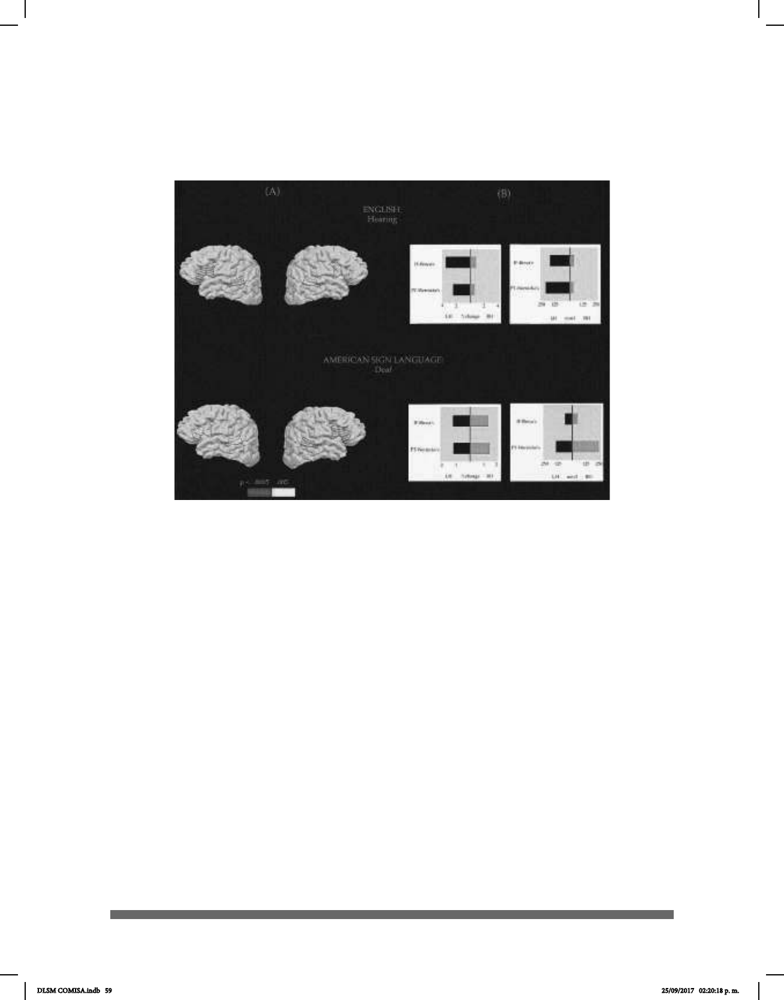

59
neurodesarrollo o impedimentos debidos a una lesión en los órganos involucrados en la
producción de señas, sus miembros superiores y manos.
En la siguiente imagen se muestra lo explicado anteriormente
Se estima que actualmente hay al menos unos 138 tipos de lenguas de señas en el
mundo y que, como todas las lenguas orales, tienen morfología, sintaxis, gramática,
léxico y también rasgos idiosincráticos e identitarios a nivel regional, como lo sería el
acento en las lenguas orales. Las LS no son equiparables o sinónimos de gestos o
un conjunto de ellos; así como los oyentes gesticulamos al hablar junto, pero no en
sustitución de palabras, también los sordos no sustituyen señas por gestos al señar. Las
LS son una construcción lingüística independiente de la oralidad, paralela tal vez. Es
necesario explorar la comprensión de cómo el cerebro hace posible y procesa las
lenguas de señas y que este conocimiento permee el ámbito jurídico, educativo y de
salud pública, para así darle el lugar y el reconocimiento que cualquier lengua oral tiene
como idioma.
Aprender una lengua de señas es como aprender otra lengua oral aparte de la materna,
inglés, francés, zapoteca o chino. Hablar español y Lengua de Señas Mexicana es un
bilingüismo que es inexcusable para fomentar y reconocer como necesario sobre todo en
ciertas prácticas y entornos como el legal y el de la salud pública, por mencionar algunos
ejemplos.
DLSM COMISA.indb 59 25/09/2017 02:20:18 p. m.